|
Waveguides |

  
|
|
Waveguides |
|
A waveguide is any of several kinds of structure intended to direct the propagation of high-frequency electromagnetic energy along specific paths. While the analysis of bends and terminations in such a system is an essentially three-dimensional problem, the propagation in long straight segments of the guide can be reduced to a two-dimensional analysis. In this case, we assume that the guide is of uniform cross-section in the (X,Y) plane, unvarying in the Z-dimension of the propagation direction. In this configuration, we can make the assumption that the fields inside the guide may be represented as a sinusoidal oscillation in time and space, and write
(3.1) 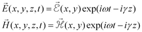
It is easy to see that these expressions describe a traveling wave, since the imaginary exponential generates sines and cosines, and the value of the exponential will be the same wherever 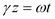. A purely real 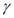 implies an unattenuated propagating mode with wavelength 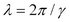along the 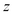 direction.
We start from the time-dependent form of Maxwell’s equations
(3.2) 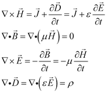
Assume then that 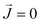 and 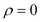, and apply (3.1) :
(3.3) 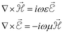 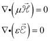
Taking the curl of each curl equation in (3.3) and substituting gives
(3.4) 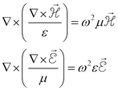.
In view of (3.1), we can write
(3.5) 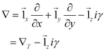,
with 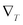 denoting the operator in the transverse plane.
Page url: index.html?chapter_3_waveguides.html